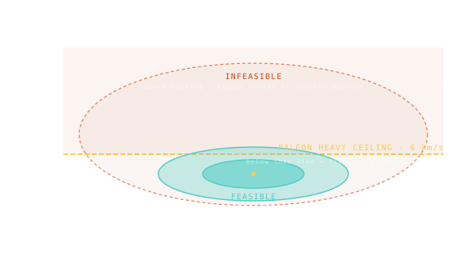

Reading Viability
A cell is viable when your rocket's ∆v capability ≥ the cell's ∆v cost — and the porkchop turns that comparison into a yes/no map.

101 · zoom in
Here's the question that turns a porkchop from a pretty heatmap into a real mission decision: can my rocket actually fly this? Each rocket — Falcon Heavy, SLS, Atlas V, you name it — has a published ∆v capability for a given payload mass. Compare that ceiling to the porkchop's per-cell costs and you have a yes/no map.
Cells where the rocket's capability exceeds the cost are doable, with margin to spare. Cells where capability matches cost exactly are doable but tight — risky, no slack for things going wrong. Cells where the cost exceeds the capability? That trajectory is simply not flyable with that rocket. You can want it all you want; physics says no.
Pick a rocket on /plan and the porkchop overlays a margin/deficit colour. The lobe shrinks for smaller rockets, expands for bigger ones. This is how mission planners actually work: try a vehicle, see what's feasible, see what isn't, swap vehicle, payload, or schedule until the cheap zone fits inside the rocket's capability. Real flight planning is exactly this iteration, just with more decimal places.
Pick a vehicle. Falcon Heavy, SLS Block 1, Atlas V N22, whatever. That vehicle has a known maximum ∆v capability with your payload mass. Compare against the porkchop: every cell where ∆v_cost ≤ ∆v_capability is a feasible launch opportunity. Every cell where it's greater is impossible without a different vehicle.
On `/plan` you can pick a launch vehicle and Orrery overlays a margin/deficit indicator. Cool teal cells become 'doable, big margin.' Yellow cells become 'doable but tight.' Red cells become impossible-with-this-vehicle, and switch to a deficit display showing how much more capability you'd need.
This is mission feasibility analysis in one view. Real planners run it many times — for different vehicles, payload masses, trajectory variants — to find the cheapest combination that meets the science requirements. The porkchop is the visualisation; the underlying choice is always 'how much rocket do I need vs how much trip am I buying.'
SEE IN THE APP
- /plan /plan compares mission ∆v against your selected vehicle's capability